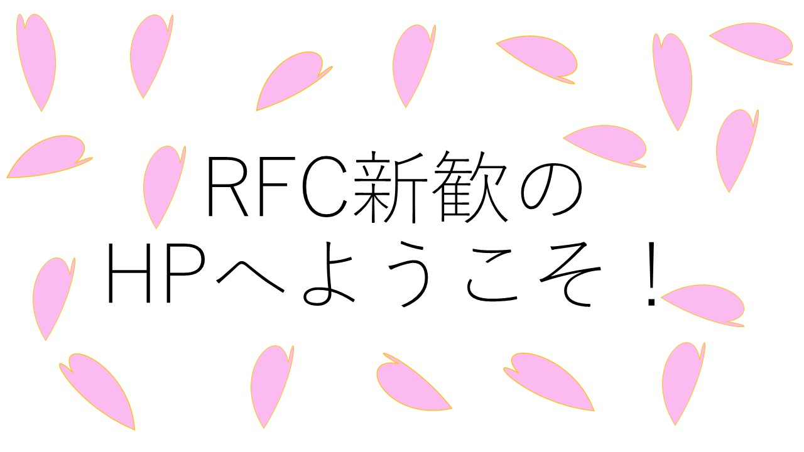

-

RFCとは
Ridai Festival Committeeの略です。 -

大学と連携して
理大祭の運営を行なっています。
お知らせ
-
RFC加入手続き最終日です。
-
全局の新歓を行いました。最後です。21時~です。zoomを用います。
-
りかラジ第五回を行いました。MS科、BE科特集です。zoomを用います。
-
広報局の新歓を行いました。zoomを用います。21時~です。
-
りかラジ第四回を行いました。理学部第二部特集です。zoomを用います。
-
女子会を行いました。zoomを用います。
-
デザイン局の新歓を行いました。zoomを用います。21時~です。
-
男子会を行いました。zoomを用います。
-
企画局の新歓を行いました。zoomを用います。21時~です。
-
りかラジ第三回を行いました。K科、OK科特集です。zoomを用います。
-
総務局の新歓を行いました。zoomを用います。
-
新歓パンフを公開しました。
-
全局の新歓を行いました(2回目)。21時~です。zoomを用います。
-
りかラジ第二回を行いました。B科特集です。zoomを用います。
-
全局の新歓を行いました。21時~です。zoomを用います。
-
りかラジ第一回を行いました。S科、OS科特集です。zoomを用います。
-
企画局の新歓を行いました。
-
広報局の新歓を行いました。
-
デザイン局の新歓を行いました。
-
総務局の新歓を行いました。
-
HPを公開しました。
-
Zoomで二度目の詳しい説明を行いました。
-
Zoomで初の詳しい説明を行いました。
情報はこちらからも発信しています。
Copyright © RFC 新歓